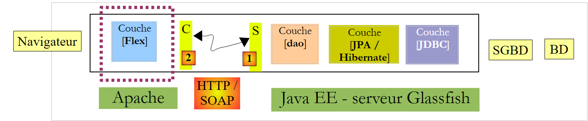
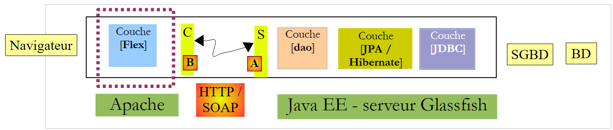
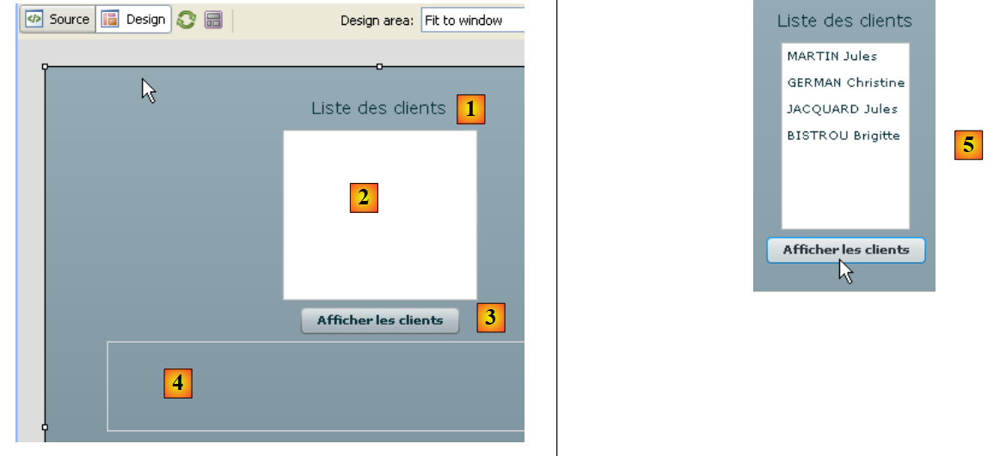
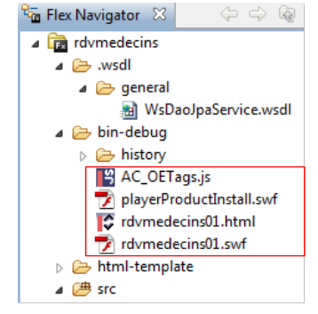
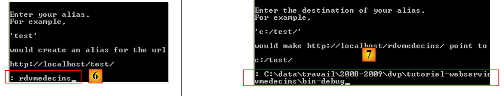

6. Clients Flex version of the JEE appointments service
We are now presenting two clients Flex applications from the JEE web service for appointments. The IDE used is Flex Builder 3. A demo of this product is available for download at the Url [https://www.adobe.com/cfusion/tdrc/index.cfm?loc=fr_fr&product=flex]. Flex Builder 3 is an Eclipse-based application. Additionally, to run the Flex client, we use an Apache web server from the Wamp tool. Any Apache server will work. The browser displaying the Flex client must have Flash Player version 9 or higher installed.
Flex applications are unique in that they run within the browser’s Flash Player plugin. In this respect, they are similar to Ajax applications, which embed scripts in the pages sent to the browser that are then executed within the browser. A Flex application is not a web application in the usual sense: it is a client application for services delivered by web servers. In this respect, it is analogous to a desktop application that acts as a client for these same services. It differs, however, in one respect: it is initially downloaded from a web server into a browser equipped with the Flash Player plugin capable of running it.
Like a desktop application, a Flex application consists primarily of two components:
- a presentation layer: the views displayed in the browser. These views offer the same richness as desktop application windows. A view is described using a markup language called MXML.
- a code component that primarily handles events triggered by user actions on the view. This code can also be written in MXML or using an object-oriented language called ActionScript. Two types of events must be distinguished:
- the event that requires communication with the web server: populating a list with data provided by a web application, sending form data to the server, etc. Flex provides a number of methods to communicate with the server in a way that is transparent to the developer. These methods are asynchronous by default: the user can continue to interact with the view while the request is being sent to the server.
- events that modify the displayed view without exchanging data with the server, such as dragging an item from a tree and dropping it into a list. This type of event is handled entirely locally within the browser.
A Flex application is often executed as follows:
 |
- in [1], a page Html is requested
- in [2], it is sent. It includes a binary file SWF (ShockWave Flash) containing the entire Flex application: all views and their event-handling code. This file will be executed by the browser’s FlashPlayer plugin.
 |
- The Flex client runs locally in the browser except when it needs external data. In that case, it requests it from the [3] server. It receives it in [4] in various formats: XML or binary. The application queried on the web server can be written in any language. Only the response format matters.
We have described the execution architecture of a Flex application so that the reader can clearly understand the difference between it and that of a traditional web application, without Ajax, such as the Asp.Net application described earlier. In the latter, the browser is passive: it simply displays Html pages built on the web server that sends them to it.
Below, we provide two examples of Flex clients solely to demonstrate the diversity of clients within a web service. Since the author is himself a Flex beginner, some points may not be explained in as much detail as they should be.
6.1. A First Flex Client
We will now write a first Flex client to display the list of clients. The client/server architecture we will implement is as follows:
 |
In this architecture, there are two web servers:
- the Glassfish server, which runs the remote web service
- the Apache server that runs the Flex client for the remote web service
We are building the Flex client using Flex Builder 3:
 |
- in Flex Builder 3, we create a new project named [1]
- we give it a name in [2] and specify in [3] which folder to generate it in
 |
- in [4], name the main application (the one that will be executed)
- In [5], the project once generated
- In [6], the main MXML file of the application
- A MXML file contains a view and the event handling code for that view. The [Source] [7] tab provides access to the MXML file. It contains <mx> tags describing the view as well as ActionScript code.
- The view can be built graphically using the [Design] [8] tab. The MXML tags describing the view are then automatically generated in the [Source] tab. The reverse is true: MXML tags added directly in the [Source] tab are reflected graphically in the [Design] tab.
As was done with the previous clients C# and Asp.Net, we will generate the local C proxy [B] for the remote S web service [A]:
 |
For the C proxy to be generated, the JEE web service must be active.
 |
- In [1], select option Data / Import Web Service
- In [2], select the folder for generating the C proxy classes and interfaces.
 |
- In [3], set the Uri from the WSDL file of remote web service S (see section 4.10.2), then proceed to the next step
- In [4] and [5], the web service described by the WSDL file specified in [3]
- in [6]: the list of methods that will be generated for proxy C. Note that these are not the actual methods of service S. They do not have the correct signature. Here, each method presented has a single parameter, regardless of the number of parameters in the actual web service method. This single parameter is a class instance that encapsulates, in its fields, the parameters expected by the remote method.
- in [7]: the package in which the C proxy classes and interfaces will be generated
- in [8]: the name of the local class that will act as a proxy to the remote web service
- in [9]: finish the wizard.
- in [10]: the list of classes and interfaces of the generated C proxy.
 |
- in [11]: the [WsDaoJpaService] class implementing the C proxy methods.
The generated class [WsDaoJpaService] implements the following interface [IWsDaoJpaService]:
/**
* Service.as
* This file was auto-generated from WSDL by the Apache Axis2 generator modified by Adobe
* Any change made to this file will be overwritten when the code is re-generated.
*/
package generated.webservices{
import mx.rpc.AsyncToken;
import flash.utils.ByteArray;
import mx.rpc.soap.types.*;
public interface IWsDaoJpaService
{
//Stub functions for the getAllClients operation
/**
* Call the operation on the server passing in the arguments defined in the WSDL file
* @param getAllClients
* @return An AsyncToken
*/
function getAllClients(getAllClients:GetAllClients):AsyncToken;
....
function getAllClients_send():AsyncToken;
...
function get getAllClients_lastResult():GetAllClientsResponse;
...
function set getAllClients_lastResult(lastResult:GetAllClientsResponse):void;
...
function addgetAllClientsEventListener(listener:Function):void;
...
function get getAllClients_request_var():GetAllClients_request;
...
function set getAllClients_request_var(request:GetAllClients_request):void;
...
}
}
- line 11: the [IWsDaoJpaService] interface implemented by the [WsDaoJpaService] class
- lines 19–31: the various methods generated for the getAllClients() method of the remote web service. The only one that closely matches the one actually exposed by the web service is the one on line 19. It has the correct name but not the correct signature: the getAllClients() method of the remote web service has no parameters.
The single parameter of the getAllClients method in the generated C proxy is of the following GetAllClients type:
/**
* GetAllClients.as
* This file was auto-generated from WSDL by the Apache Axis2 generator modified by Adobe
* Any change made to this file will be overwritten when the code is re-generated.
*/
package generated.webservices
{
import mx.utils.ObjectProxy;
import flash.utils.ByteArray;
import mx.rpc.soap.types.*;
/**
* Wrapper class for a operation required type
*/
public class GetAllClients
{
/**
* Constructor, initializes the type class
*/
public function GetAllClients() {}
}
}
This is an empty class. This could be because the target method getAllClients does not accept any parameters.
Now let’s examine the generated classes for the entities Doctor, Client, Rv, and Appointment. Let’s look, for example, at the Client class:
package generated.webservices
{
import mx.utils.ObjectProxy;
import flash.utils.ByteArray;
import mx.rpc.soap.types.*;
public class Client extends generated.webservices.Personne
{
public function Client() {}
}
}
The Client class is also empty. It derives (line 7) from the following Person class:
package generated.webservices
{
import mx.utils.ObjectProxy;
import flash.utils.ByteArray;
import mx.rpc.soap.types.*;
public class Personne
{
public function Personne() {}
public var id:Number;
public var nom:String;
public var prenom:String;
public var titre:String;
public var version:Number;
}
}
- Lines 11–15: These are the attributes of the Person class defined within the JEE web service.
We now have the main elements of the C proxy. We can now use it.
The client's main file, [rdvmedecins01.xml], is as follows:
<?xml version="1.0" encoding="utf-8"?>
<mx:Application xmlns:mx="http://www.adobe.com/2006/mxml" layout="vertical" creationComplete="init();">
<mx:Script>
<![CDATA[
import generated.webservices.Client;
...
// data
private var ws:WsDaoJpaService;
[Bindable]
private var clients:ArrayCollection;
private function init():void{
...
}
private function loadClients():void{
...
}
...
private function displayClient(client:Client):String{
...
}
]]>
</mx:Script>
<mx:Label text="Liste des clients" fontSize="14"/>
<mx:List dataProvider="{clients}" labelFunction="displayClient"></mx:List>
<mx:Button label="Afficher les clients" click="loadClients()"/>
<mx:Text id="txtMsgErreur" width="454" height="75"/>
</mx:Application>
In this code, several elements should be distinguished:
- the application definition (line 2)
- the description of its view (lines 27–30)
- the event handlers in the ActionScript language within the <mx:Script> tag (lines 3–26).
Let’s start by discussing the definition of the application itself and the description of its view:
- line 2: defines
- the layout of the components within the view container. The layout="vertical" attribute indicates that the components will be arranged one below the other.
- the method to be executed when the view has been instantiated, c.a.d. the moment when all its components have been instantiated. The attribute creationComplete="init();" indicates that the init method on line 13 must be executed. creationComplete is one of the events that the Application class can emit.
- Lines 27–30 define the view components
- Line 27: defines a text
- Line 28: a list in which the list of clients objects will be placed. The tag dataProvider="{clients}" specifies the data source that should populate the list. Here, the list will be populated with the clients object defined on line 11. To be able to write dataProvider="{clients}", the field clients must have the attribute [Bindable] (line 10). This attribute allows a variable ActionScript to be referenced outside the <mx:Script> tag. The field clients is of type ArrayCollection, a ActionScript type that allows for storing lists of objects, in this case a list of objects of type Client.
- Line 29: a button. Its click event is handled. The attribute click="loadClients()" indicates that the loadClients method on line 17 must be executed when the button is clicked. This button will trigger the request to the web service for the list of clients objects.
- Line 30: a text box intended to display any error message that might be returned by the server in response to the previous request.
Lines 27–30 generate the following view in the [Design] tab:
 |
- [1]: generated by the Label component in line 27
- [2]: generated by the List component on line 28
- [3]: was generated by the Button component in line 29
- [4]: was generated by the Text component on line 30
- [5]: an example of execution
Let’s now examine the ActionScript code on the page. This code handles view events.
<mx:Application xmlns:mx="http://www.adobe.com/2006/mxml" layout="vertical" creationComplete="init();">
<mx:Script>
<![CDATA[
import generated.webservices.Client;
...
// data
private var ws:WsDaoJpaService;
[Bindable]
private var clients:ArrayCollection;
private function init():void{
// instantiate the web service proxy
ws=new WsDaoJpaService();
// configure event handlers
ws.addgetAllClientsEventListener(loadClientsCompleted);
ws.addEventListener(FaultEvent.FAULT,loadClientsFault);
}
private function loadClients():void{
// the list of clients is requested
ws.getAllClients(new GetAllClients());
}
private function loadClientsCompleted(event:GetAllClientsResultEvent):void{
// we retrieve the clients in the sent result
clients=event.result as ArrayCollection;
}
private function loadClientsFault(event:FaultEvent):void{
// error msg is displayed
txtMsgErreur.text=event.fault.message;
}
private function displayClient(client:Client):String{
// a customer is displayed
return client.nom + " " + client.prenom;
}
]]>
</mx:Script>
<mx:Label text="Liste des clients" fontSize="14"/>
<mx:List dataProvider="{clients}" labelFunction="displayClient"></mx:List>
<mx:Button label="Afficher les clients" click="loadClients()"/>
<mx:Text id="txtMsgErreur" width="454" height="75"/>
- line 9: ws refers to the C proxy of type WsDaoJpaService, the class generated earlier that implements the methods for accessing the remote web service.
- line 13: the init method is executed when the view is instantiated (line 1)
- line 15: an instance of the C proxy is created
- line 17: an event handler is associated with the event "the asynchronous method GetAllClients has completed successfully". For every method m of the remote web service, the C proxy implements a method addmEventListener that allows a handler to be associated with the event "the asynchronous method m has completed successfully". Here, line 17 indicates that the loadClientsCompleted method on line 26 must be executed when the Flex client has received the list of clients.
- Line 18: An event handler is associated with the event "an asynchronous method of proxy C has failed". Here, line 18 specifies that the loadClientsFault method on line 31 must be executed whenever an asynchronous request from proxy C to web service S fails. Here, the only request that will be made is the one requesting the list of clients.
- Ultimately, the init method on line 13 instantiated proxy C and defined event handlers for the asynchronous request that will be made later.
- Line 21: The method executed when the [Afficher les clients] button is clicked (line 44)
- Line 23: The asynchronous method getAllClients of the C proxy is executed. It is passed a GetAllClients instance responsible for encapsulating the parameters of the called remote method. Here, there are no parameters. An empty instance is created. The getAllClients method is asynchronous. Execution continues without waiting for the data returned by the server. In particular, the user can continue to interact with the view. The events triggered by the user will continue to be handled. Thanks to the init method, we know that:
- the loadClientsCompleted method (line 26) will be executed when the Flex client has received the list of clients
- the loadClientsFault method (line 31) will be executed if the request ends in an error.
- Line 28: The list from clients is retrieved from the event. We know that the getAllClients method of the remote web service returns a list. This list is placed in the clients field on line 11. A type conversion is required. Since the list on line 43 is bound to the clients field, it is notified that its data has changed. It then displays the list from clients. It will display each element of the clients list using the displayClient method (line 43).
- Line 36: The displayClient method receives a Client type. It must return the string that the list should display for this client. Here, the first and last names (line 38).
- Line 31: The method executed when a request to the web service fails. It receives a parameter of type FaultEvent. This class has a `fault` field that encapsulates the error returned by the server. fault.message is the message accompanying the error.
- Line 33: The error message is displayed in the text box provided for this purpose.
When the application was built, its executable code is located in the [bin-debug] folder of the Flex project:
 |
Above,
- the file [rdvmedecins01.html] represents the file Html that the browser will request from the web server to obtain the Flex client
- the file [rdvmedecins01.swf] is the Flex client binary that will be embedded in the Html page sent to the browser and then executed by the browser’s Flash Player plugin.
We are ready to run the Flex client. First, we need to set up the runtime environment it requires. Let’s return to the client/server architecture we tested:
 |
Server side:
- launch SGBD MySQL
- Start the Glassfish server
- Deploy the JEE web service for appointments if it is not already deployed
- If necessary, test one of the previous clients instances to verify that everything is in place on the server side.
Client-side:
Start the Apache server that will serve the Flex application. Here we use the Wamp tool. With this tool, we can assign an alias to the [bin-debug] folder of the Flex project.
 |
- The Wamp icon is at the bottom of the screen
- Left-click on the Wamp icon, select Apache option / Alias Directories [2]
- Select option [5]: Add an alias
 |
- In [6], give an alias (any name) to the web application that will be executed
- In [7], specify the root of the web application that will use this alias: this is the [bin-debug] folder of the Flex project we just built.
Let’s review the structure of the [bin-debug] folder in the Flex project:
 |
The file [rdvmedecins01.html] is the Html file of the Flex application. Thanks to the alias we just created on the [bin-debug] folder, this file will be accessed via url [http://localhost/rdvmedecins/rdvmedecins01.html]. We open this file in a browser with the Flash Player plugin version 9 or higher:
 |
- in [1], the Url from the Flex application
- in [2], we request the list of clients
- in [3], the result obtained when everything goes well
- to [4], the result obtained when we request the display of clients even though the web service has been stopped.
You might be curious to view the source code of the received Html page
The body of the page begins on line 39. It does not contain the standard Html but an object (line 47) of type "application/x-shockwave-flash" (line 60). This is the [rdvmedecins01.swf] file (line 54) that can be found in the [bin-debug] folder of the Flex project. It is a large file: approximately 600 KB for this simple example.
6.2. A second Flex client
The second Flex client will not use the C proxy generated for the first one. We want to show that this step is not essential, even though it offers advantages over the one that will be presented here.
The project evolves as follows:
 |
- in [1], the new Flex application
- in [2] the associated executables
- in [3] the new view: we will display the list of doctors.
The code MXML for the application [rdvmedecins02.mxml] is as follows:
<?xml version="1.0" encoding="utf-8"?>
<mx:Application xmlns:mx="http://www.adobe.com/2006/mxml" layout="vertical">
<mx:Script>
<![CDATA[
import mx.rpc.events.ResultEvent;
import mx.rpc.events.FaultEvent;
import mx.collections.ArrayCollection;
// data
[Bindable]
private var medecins:ArrayCollection;
private function loadMedecins():void{
// we ask for the list of doctors
wsrdvmedecins.getAllMedecins.send();
}
private function loadMedecinsCompleted(event:ResultEvent):void{
// we get the doctors back
medecins=event.result as ArrayCollection;
}
private function loadMedecinsFault(event:FaultEvent):void{
// error msg is displayed
txtMsgErreur.text=event.fault.message;
}
// physician display
private function displayMedecin(medecin:Object):String{
return medecin.nom + " " + medecin.prenom;
}
]]>
</mx:Script>
<mx:WebService id="wsrdvmedecins"
wsdl="http://localhost:8080/serveur-webservice-ejb-dao-jpa-hibernate/WsDaoJpaService?wsdl">
<mx:operation name="getAllMedecins"
result="loadMedecinsCompleted(event)" fault="loadMedecinsFault(event);">
<mx:request/>
</mx:operation>
</mx:WebService>
<mx:Label text="Liste des médecins" fontSize="14"/>
<mx:List dataProvider="{medecins}" labelFunction="displayMedecin"></mx:List>
<mx:Button label="Afficher les médecins" click="loadMedecins()"/>
<mx:Text id="txtMsgErreur" width="300" height="113"/>
</mx:Application>
We will only comment on the new features:
- lines 42–45: the new view. It is identical to the previous one except that it has been adapted to display doctors rather than clients.
- lines 35–41: the web service is described here by an <mx:WebService> tag (line 35). The C proxy used in the previous version is no longer used here.
- Line 35: The id attribute gives the web service a name.
- Line 36: The wsdl attribute specifies the uri of the WSDL file for the web service. This is the same Uri used by the previous client and defined in Section 4.10.2.
- Lines 37–40: define a method of the remote web service using the <mx:operation> tag
- Line 37: The referenced method is defined by the name attribute. Here we reference the remote method getAllMedecins.
- Line 38: We define the methods to be executed if the operation succeeds (result attribute) and if it fails (fault attribute).
- line 39: the <mx:request> tag is used to define the operation’s parameters. Here, the remote method getAllMedecins has no parameters, so we leave it blank. For a method accepting parameters param1 and param2, we would write:
where param1 and param2 would be variables declared and initialized within the <mx:Script> tag
Inside the <mx:Script> tag, we find ActionScript code similar to that examined in the previous client. The only difference is the loadMedecins method in lines 13–16. It is the way the remote method [getAllMedecins] is called that differs:
- line 15: the [wsrdvmedecins] web service defined on line 35 and its [getAllMedecins] operation defined on line 37 are used. To execute this operation, the send method is used. This method initiates the asynchronous call to the getAllMedecins method of the web service defined on line 35. The send method will make the call using the parameters defined by the <mx:request> tag on line 39. Here, there are no parameters. If the method had had the parameters param1 and param2, the loadMedecins script would have assigned values to these parameters before calling the send method.
All that remains is to test this new application: